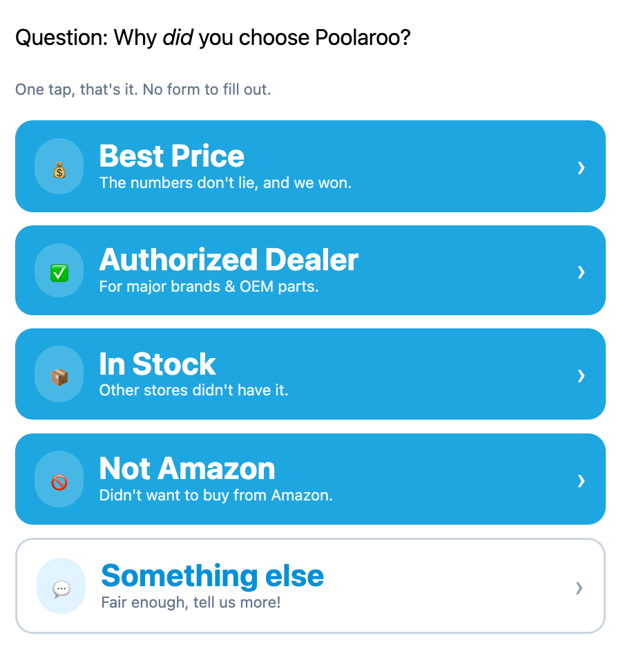
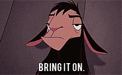

Earlier this week, Poolaroo saw its 300th order placed and shipped. That's a minor milestone in Ecommerce, and I look forward to doing that volume in a week as soon as we can...
But to help build the speed of that flywheel, I realized I needed to get more momentum from each customer that we do earn.
When it comes down to it, while I know how hard we'll work for our customers, if someone is shopping for the best deal on E-Z Pool, and happen across our little site, why would they pick us?
If we could better understand why anyone would buy from our site, rather than a larger retailer, or Amazon itself, then we could reinvest into what was already working for people who decided we were their best option.
First, I built an email survey (hat tip to Seguno for Shopify marketing emails) and a custom landing page that would capture a one click survey answer.
But then... someone brilliant suggested I just put that in the order confirmation page. This would have the advantage of not requiring the recipient to be opted-in to marketing emails (~10% of customers), but I was pretty sure it would take Shopify Plus, which we don't yet have.
However, whether or not that's true, that idea was still just a stepping stone to the right answer: the order confirmation email! This is what we inserted:

This approach avoids sending an extra email to anyone, doesn't push the limits of what is considered "transactional" in the email world, and increases the odds of getting replies considerably.
If it turns out that our customers are buying from us for any of these reasons, I know how to use that insight to do a better job reaching more customers like them. And if not, well, that's data, too.
Now, time for the tough love of actual customer feedback.

Have thoughts? Join the discussion on LinkedIn.